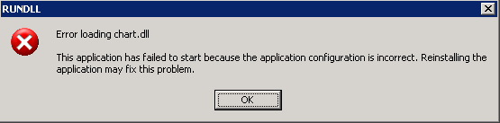

CLAUDE AND CLAUDE-SETUP
This is the documentation for CLAUDE and CLAUDE-SETUP, version 1.0.
CLAUDE (the Common Lisp Library Audience Expansion Toolkit) exports libraries written in Common Lisp, so that applications being developed in other languages can access them. CLAUDE co-operates with foreign runtimes in the management of CLOS objects, records, arrays and more primitive types. Lisp macros make the task of exporting a library simple and elegant; template documentation along with C headers and sample code files relieve some of the burden of explaining such exports to the application programmer.
CLAUDE-SETUP configures CLAUDE for your library.
1 Getting Started
For a general overview of CLAUDE, see the paper presented at ELS 2014.
For an example of an library developed using CLAUDE, see Ravenbrook's Chart Desktop.
1.1 Rapid Example
With very little overhead, the library author can define an external class:
(defclass-external frob () ())
and an external function which returns an instance of that class:
(defun-external (new-frob :result-type object) () (make-instance 'frob))
A Python application programmer can then instantiate the class thus:
>>> claude.Frob() <Claude Frob handle=0x200538b0> >>>
1.2 Summary
These are the steps you'll need to take, to export your lisp library:
- Check out the requirements below.
- Use CLAUDE-SETUP to create and configure a copy of the toolkit.
- Merge your source code into this (or, at least, point the system definition to your code).
- Write a CLAUDE interface layer to your code.
- Run the save-dll.lisp script.
- Test what you've done so far by expanding the sample Python interface to work with it.
- Now get the C interface working too.
- Expand the template documentation, to cover your exports as well as CLAUDE's.
1.3 Requirements
- CLAUDE currently only runs on LispWorks. It's been tested with version 6.1 on 32-bit Windows. CLAUDE could be ported to other operating systems, and should be portable to a few other lisp implementations (probably: Allegro, ABCL and ECL), all for reasonable effort. Please talk to me if you need a port to a different platform.
- Application programmers using your library, and their end users, will need the runtime libraries upon which LispWorks depends.
- CLAUDE uses the Bordeaux Threads and Common Foreign Function Interface libraries. It assumes that Quicklisp is present and able to load them.
- The examples require Python 2.7 and a C compiler (I've tested against: Visual Studio 2012 C and C++; Cygwin; MinGW).
- The template documentation is written as reStructuredText. I use rst2html.py to convert it to HTML, but you might choose another method, or throw the whole thing out and start again.
1.4 Runtime libraries
Your users (application programmers using your CLAUDE-based library) must be shown the following warning, which is also included in the template documentation.
Tip
If you don't intend either to copy / move the DLL after you've unpacked it, or to redistribute an application you've built using this library, you can skip this small print.
The library needs access to Microsoft's C Runtime and Standard C++ Libraries. If it can't find them it simply won't run. You'll see something like this:
These runtime libraries can be either installed to a central location on your computer or — as in the .ZIP archive — present in a Microsoft.VC80.CRT\ directory alongside the library's DLL.
Central location
If the runtime libraries have already been installed on your machine (by the installer of some other application, say) then you can move or copy the library DLL as you wish, and it will continue to work.
Private copy
Otherwise, if you move or copy the DLL you should keep a copy of Microsoft.VC80.CRT\ alongside it.
Redistribution
If you redistribute an application based on this library then you will need to revisit this issue. Advice on Redistributing Visual C++ libraries will be found on the MSDN website: here.
1.5 Setting up your library
CLAUDE-SETUP can be downloaded from http://www.nicklevine.org/claude/. It contains an unconfigured copy of CLAUDE. Configure CLAUDE for your library by calling claude-setup:configure, supplying as arguments the keyword naming your library and a location where it can be unpacked. For example:
(asdf:load-system :claude-setup) (claude-setup:configure :wombat "c:/home/wombat")
After running the above form, the wombat directory will contain the following:
c:/home/wombat/ build/save-dll.lisp script for saving library as DLL wombat.asd * system definition for wombat claude/ CLAUDE source examples/C/ * a brief test case include/ * C header file library text file containing the string "wombat" manual/ * wombat documentation Microsoft.VC80.CRT/ runtime libraries used by CLAUDE pyWombat/ * example Python interface src/ * system definition for wombat
You'll find working with this document, and in particular the Python example, easiest if you keep all these files together.
The starred items above will need your attention.
1.6 Road test
Even before you've done any work to connect your library to CLAUDE you can test run the vanilla framework, by using the build script save-dll.lisp to save a DLL and then running some tests through the Python interface.
CLAUDE is a 32-bit library; you'll need a 32-bit Python installation.
C:\home\wombat> lispworks -init build\save-dll.lisp [...] ; saves wombat.dll C:\home\wombat> python Python 2.7.1 >>> from pyWombat import wombat >>> wombat.Wombat() <Wombat Wombat handle=0x200538b0> >>> wombat.objects.communications_test() True >>>
See below for details of further tests in the vanilla interface.
1.7 Build script
This script should be loaded into a TTY LispWorks (using the -init command-line option is recommended) to save your CLAUDE-based library as a DLL.
Your system should have been defined in the file src/defsys.lisp. If you'd rather use ASDF to manage your code then you'll need an obvious edit to (defun application-load) in the script to support this.
Supply -force on the command-line to force recompile the system.
Supply -devel to save a full development image (LispWorks IDE opens when your library is initialized); otherwise the library will be delivered (at level 0).
When the full development image restarts, it automatically reloads the CLAUDE system; if you have not added any defun-external forms since you last saved the image then all your edits are now part of the library.
Example:
lww-console-611.exe -init build\save-dll.lisp -devel
You will need two Quicklisp libraries (Bordeaux Threads, and the Common Foreign Function Interface) and it's assumed that Quicklisp knows where to find them.
1.7.1 Configurations
- If you have a .ico file which you want associated with the library, uncomment the :icon-file line in the call to deliver.
- In the IDE you might find it handy for listeners to open in some particular package. See #+try-this towards the end of the script.
1.8 Library names
The rest of this document assumes, for want of anything better, that your library is called Mumble. The copy of CLAUDE which forms part of the CLAUDE-SETUP distribution has already been configured under that name, the upshot being that you can use it along with most of the examples here and not have to change any names.
The mapping from lisp names to foreign names is given by:
(substitute #\_ #\- (format nil "~(~a_~a~)" *claude-library* lisp-name))
2 External Interface
This section covers everything the application programmer needs to know about driving CLAUDE. I'll cover starting and stopping the library, function calls, error handling, the structures CLAUDE uses, and memory and how to free it.
Your users will have to start by implementing their own infrastructure layer, as described below. In your role as their software supplier, you should know how it's done. Also, the lisp reference assumes familiarity with this section and its terminology. The C example might help, as should the following files in the Python interface:
- invoke.py
- Function call wrappers: extract results, check for errors
- lib.py
- Stubs for all calls into the DLL
- objects.py
- Implementations of the objects that CLAUDE uses
In the following I'll use extracts from the Python interface to demonstrate how to drive the library. I'll assume some familiarity with Python's ctypes foreign function library.
The library's calling convention is stdcall.
2.1 Initialisation and termination
The CLAUDE library initialises itself automatically, the first time you call any function in its interface. If you find this distasteful, you can initialise the library explicitly by calling mumble_init().
Somewhat more important is to close the library gracefully when you're finished it, by calling mumble_close(); failure to do may result in a warning message.
The Python interface arranges for this in connect.py, which also sets the global dll to point to the ctypes shared library object. Every export from the library is now a member of the dll object (for example, we can invoke the library function mumble_init() by calling dll.mumble_init).
connect.py, along with everything else you'll need to go with it, is imported by mumble.py:
>>> from pyMumble import mumble >>>
2.2 Calling CLAUDE functions
All CLAUDE functions return a result code of type mumble_res_t. They indicate success by returning MUMBLE_RES_OK, which is defined to be zero; they signal errors by returning MUMBLE_RES_FAIL, which is non-zero, and retaining a string describing the error. You can retrieve the most recent error string by calling mumble_last_error().
In the Python example, the function check in invoke.py examines the return value of a function call into the library. If this value is not OK (zero) then a MumbleError is raised.
OK = 0 def check(func, *args): """ Apply func to its args, checking the result code. """ result = func(*args) if result != OK: raise MumbleError()
Library functions which need to return some value in addition to the result code do so by reference: they take a pointer as their first argument and write through it.
Still in invoke.py, the function wrapper val creates just such a pointer. This pointer is prepended to func's argument list, the library is invoked, the result code checked, and the result is extracted. The wrapper void has the same form but is for calls which don't return a useful result.
def val(func): """ Return a function which calls func with an additional pointer argument, checks the result, and dereferences the pointer. """ def invoker(*args): pointer = ctypes.c_void_p() check(func, ctypes.byref(pointer), *args) return pointer.value return invoker def void(func): """ Return a function which calls func, checking the result. """ def invoker(*args): check(func, *args) return invoker
2.3 Data model
CLAUDE functions take arguments of the following types:
- integer (signed and unsigned);
- UTF-8 encoded string;
- handle (denoting an object within the library);
- record (sequence of values whose length and constituent types are determined by the context in which it's being passed);
- array (sequence of values whose length is not known in advance);
- pointer to any of the above (for return values);
- pointer to function (passed as an unsigned integer).
This version of CLAUDE does not support floats. Please write to me if this is a problem.
Handles are only ever generated by the library. When you have no further use for a handle you should call mumble_remove_objects().
Aggregate values — strings, records (for example, a pair of integers representing a co-ordinate pair) and arrays (for example, a list of co-ordinate pairs) — might be generated by either the library or your application.
The contents of any aggregate value created by your application, passed into CLAUDE and retained there — for example, the string to be used as the title of a display window, or an array of records describing new objects to be added to the system — are copied by the library before your call returns. So you may immediately recycle the memory associated with such values.
Any aggregate value created within the library and passed to your application as return data will be retained by CLAUDE, until you declare that you have no further use for it by calling the library function mumble_free(). If you free a sequence (i.e. a record or array) which itself contains any aggregate values, then these values will be freed recursively.
The Python interface has a simple stub for invoking mumble_free():
def free(pointer): invoke.void(dll.mumble_free)(pointer)
Note that mumble_free() does not free handles, or release them in any sense. Freeing an array of objects releases the resources associated with the array itself and not those of the objects. (See instead mumble_remove_objects().)
Warning
The library is designed to catch and recover from errors but it cannot be totally resilient to bad data: the only way for it to interpret an aggregate value (string, record, array) is to dereference the corresponding pointer. If the pointer is invalid this may lead to an unhandled exception which could crash either the library or your application. If you're working in Python the following minimal check from invoke.py is suggested.
def plausible_address(address): """ Return the address, checking that it refers to valid memory. This is only the most basic of checks. The address of a compound record might pass this test but what it points to might be rubbish, and we can't check for that without going into a description of record layout. The test works by loading one byte from the given address. If there's anything wrong with the address, Python will handle the error and raise one of its own Exceptions. """ ctypes.string_at(address, 1) return address
2.4 Error handling
Let's see how errors might be handled. The MumbleError exception defined in invoke.py demonstrates:
- checking result codes;
- a CLAUDE function returning a value in addition to its result code;
- use of mumble_free() to release the resources associated with a string which originated inside the library.
Raising this exception calls mumble_last_error() and reports the result. As corner cases, the exception checks whether (a) there actually was any error in the first place, (b) it was possible to report the error and (c) it was possible to mumble_free() the error report. In the last case a warning note is tacked onto the head of the report rather than risking a chain of recursive errors.
class MumbleError(Exception): def __init__(self): string = ctypes.c_char_p(None) error = dll.mumble_last_error(ctypes.byref(string)) if error != OK: self.string = 'Mumble reports an error, ' \ + 'and an error reporting the error.' else: value = string.value if value: self.string = value.decode('utf-8') if not config.show_backtrace: self.string = self.string.splitlines()[0] if dll.mumble_free(string) != OK: # Today isn't turning out very well. (Not that I # was seriously expecting to end up on this branch.) warning = '*** Warning: Mumble was unable to free ' \ + 'the mumble_last_error string. ***' self.string = warning + '\n\n' + self.string else: self.string = 'How did this happen? There was no error in Mumble.' def __str__(self): return self.string
(You'll note that I haven't made use of the bundling functions check, val or void here. That's because any failure they encountered would recursively raise another MumbleError, which could rapidly spiral out of control.)
The string returned from mumble_last_error() describes the most recent error signalled by the library. If this was a pilot error then you'll get a one line description of the problem. If alternatively some exceptional condition (say: division by zero) was caught then a backtrace will be included. This might be longer and less edifying than you care for; MumbleError uses the configuration variable show_backtrace from config.py to decide whether to show you the backtrace.
If there is no error to report, mumble_last_error() returns a null pointer.
Let's go under the hood. I'll bypasss all the bundling and checking functions (check etc.) and make a series of low-level calls, at the Python prompt, directly into the DLL:
- provoking a deliberate error (result code is not OK),
- calling mumble_last_error() to obtain a string describing the error,
- mumble_free()ing the string, and
- polling to see if there's another error string (which there isn't).
>>> import ctypes >>> from pyMumble.invoke import dll >>> dll.mumble_free(0xdeadbeef) -1 >>> string = ctypes.c_char_p(None) >>> dll.mumble_last_error(ctypes.byref(string)) 0 >>> string c_char_p('Pointer to 0xdeadbeef is invalid and cannot be freed.\r\n') >>> dll.mumble_free(string) 0 >>> dll.mumble_last_error(ctypes.byref(string)) 0 >>> string c_char_p(None) >>>
The C equivalent to the above might be based on the following fragments:
#define ASSERT_OK(form) \ {mumble_res_t res = (form); assert(res == MUMBLE_RES_OK);} #define ASSERT_FAIL(form) \ {mumble_res_t res = (form); assert(res == MUMBLE_RES_FAIL);} mumble_aggregate_t pointer; pointer.string = (char*)0xdeadbeef; ASSERT_FAIL(mumble_free(pointer)); ASSERT_OK(mumble_last_error(&(pointer.string))); assert(strcmp(pointer.string, "Pointer to 0xdeadbeef is invalid and cannot be freed.\r\n") == 0); ASSERT_OK(mumble_free(pointer)); ASSERT_OK(mumble_last_error(&(pointer.string))); assert(pointer.string == 0);
I won't document every possible way to raise an exception while working with this code. Most MumbleErrors have fairly obvious causes. Working with discarded objects is the primary culprit. (The C functions reference is more thorough about error conditions.)
2.5 Dereferencing
Working from Python, we'll need to be able to switch between ctypes instances and their memory addresses. (With the foreign interfaces of other languages, the corresponding solution might look very different. In C it'll be trivial.)
The pyMumble function dereference_address in objects.py takes one argument which it treats as the memory address of a ctypes.c_uint. It dereferences this address and returns the integer. Dereferencing 0 returns None.
The function address_of returns the address of a ctypes instance's underlying data.
In the following example we create a ctypes array which contains an integer and the address of a ctypes string. By dereferencing the address of the array we are able to recover the integer; by dereferencing the address of the following word in memory we recover the address of the string.
>>> from pyMumble import objects >>> s = ctypes.c_char_p('hello') >>> x = ctypes.pointer((ctypes.c_uint *2)(99, objects.address_of(s))) >>> objects.address_of(s) 39344980L >>> objects.address_of(x) 38708808L >>> objects.dereference_address(38708808L) 99L >>> objects.dereference_address(38708808L + 4) 39344980L >>> hex(objects.dereference_address(_)) '0x6c6c6568L' >>>
Tip
Watch out for the Python garbage collector!
>>> ctypes.c_char_p('goodbye') c_char_p('goodbye') >>> objects.address_of(_) 39343764L >>> objects.dereference_address(_) 0L >>>
In this case we haven't retained a pointer to the ctypes string. Its data has already been reclaimed and is no longer accessible to us.
2.6 Records
A record is a sequence of CLAUDE values in memory.
Both the number of the values which constitute a record, and their various types, are determined by the context in which that record is used.
As a very simple example of records in pyMumble, I'll get values into and out of a record used to hold a co-ordinate pair. In this case the record consists of two values and both happen to have the same type: signed integers. I'll use the functions construct and deconstruct which are fully documented in objects.py and which basically do what I did the long way round in the dereferencing example above.
>>> from pyMumble import objects >>> location = (101, 234) >>> x = objects.construct(location) >>> x <pyMumble.objects.LP_c_ulong_Array_2 object at 0x024EA620> >>> objects.deconstruct(objects.address_of(x), 2) (101L, 234L) >>>
2.7 Arrays
An array is another form of sequence of CLAUDE values in memory .
This time the number of values is not determined by context but must be passed as part of the array. The types of an array's members are always the same.
Under the hood, arrays are implemented as records. The first member of the record is the array's length; the remaining members are the array's values.
Two examples, the first in C. The macro CHECK is defined in mumble.h; it verifies that a library call has returned MUMBLE_RES_OK.
#define mumble_record_size(n) (offsetof(mumble_record_s, values) \ + (n) * sizeof(mumble_value_t)) #define mumble_array_size(n) (offsetof(mumble_array_s, values) \ + ((n)+1) * sizeof(mumble_value_t)) callback = (mumble_record_t)alloca(mumble_record_size(2)); callback->values[0].aggregate.string = "mumble_advise_condition"; callback->values[1].uinteger = (int)mumble_advise_condition; callbacks = (mumble_array_t)alloca(mumble_array_size(1)); callbacks->length = 1; callbacks->values[0].aggregate.record = callback; ASSERT_OK (mumble_set_callbacks((mumble_handle_t)NULL, callbacks));
The second example uses pyMumble:
>>> import ctypes >>> from pyMumble import objects >>> s = map(ctypes.c_char_p, ['hello', 'goodbye']) >>> x = objects.pack(s) >>> x <pyMumble.objects.LP_c_ulong_Array_3 object at 0x022B9620> >>> unwrap = lambda(name): (ctypes.cast(name, ctypes.c_char_p).value) >>> objects.unpack(objects.address_of(x), unwrapfun=unwrap) ['hello', 'goodbye'] >>>
Pack and unpack are implemented in objects.py, in terms of construct and deconstruct above. Note that by default, unpack is designed to pass its array argument to mumble_free() after the array's members have been extracted; this allows the CLAUDE DLL to reclaim the memory pointed to by the array (and by any aggregate values which it contains). Overriding this behaviour is unlikely to be useful to you if the array originated inside the library; once you've unpacked an array there is no further use for it.
2.8 Handles
In CLAUDE, objects are represented by handles. Your library will provide functions for constructing each of the various types of object, and each of these functions will return a handle.
In pyMumble we define classes corresponding to each of the CLAUDE object types — these are all subclasses of MumbleObject which is defined in objects.py — and create instances of these classes to correspond to each new handle:
_objects = {0:None} class MumbleObject(object): def __init__(self, handle): _objects[handle] = self self.handle = handle def box(self): return self.handle def _discard(self): handle = self.handle del _objects[handle] self.handle = None def unbox(handle): return _objects[handle]
We can now use arrays, box and unbox to demonstrate the use of mumble_remove_objects():
def remove_objects(objects): box = lambda(x): x.box() invalids = unpack(lib.remove_objects(pack(objects, box)), unbox) for invalid in invalids: invalid._discard()
Note incidentally that:
- the array created by pack is reclaimed by the Python garbage collector; and
- the array created by mumble_remove_objects() is explicitly passed to mumble_free() by unpack.
In this example I use unbox as a debugging aid. Suppose I'm faced with the following error:
pyMumble.invoke.MumbleError: Wibble, with #<Mumble MumbleObject handle=0x20053748>), which is not permitted.
Then unbox can identify the object with handle 0x20053748:
>>> mumble.objects.unbox(0x20053748) <Mumble MumbleObject handle=0x20053748> >>>
2.9 Tests
Before moving on, you should conduct a test equivalent to the following. It will ensure that the library is working, that you are communicating with the library successfully and in particular that you are packing and unpacking arrays correctly.
In this test we:
- create and record the handles of two unboxed vanilla CLAUDE objects;
- pass one of them to CLAUDE and observe that mumble_return_object() returns precisely the same handle;
- pass an array containing the pair to CLAUDE and observe that mumble_return_array() returns an equivalent array; and
- define an externally callable function which returns its argument, pass this plus one of the objects to CLAUDE, and allow the library to apply our function to that object and confirm that the right value came back to it.
>>> import ctypes >>> @ctypes.WINFUNCTYPE(ctypes.c_uint, ctypes.c_uint) ... def return_handle(handle): ... return handle ... >>> from pyMumble.invoke import dll, void, val >>> obj_1 = val(dll.mumble_new_object)() >>> obj_2 = val(dll.mumble_new_object)() >>> objs = [obj_1, obj_2] >>> objs [537280600, 537280728] >>> val(dll.mumble_return_object)(obj_1) 537280600 >>> objects.unpack(val(dll.mumble_return_array)(objects.pack(objs))) [537280600L, 537280728L] >>> ctypes.c_bool(val(dll.mumble_invoke_return_object)(return_handle, obj_1)) c_bool(True) >>>
See also communications_test in objects.py.
2.10 Reference
2.10.1 Types
The following types are declared in mumble.h.
mumble_aggregate_t
An aggregate value is a string, record, or array. Note that these are all pointer types.
The contents of any aggregate value created by your application, passed into CLAUDE and retained there — for example, the string to be drawn on some window's titlebar — are copied by CLAUDE before your call returns. So you may immediately recycle the memory associated with such values.
The contents of any aggregate value created within CLAUDE and passed to your application will be retained by CLAUDE until you declare that you have no further use for them. See the library function mumble_free() for this.
typedef union mumble_aggregate_t { char *string; /* UTF-8 */ struct mumble_record_s *record; struct mumble_array_s *array; } mumble_aggregate_t;
mumble_array_t
An array is the memory address of a sequence of values whose length is not known in advance. The constituent types are all the same and are determined by context. The first item in any array is always the number of remaining items. (If you wish to pass three items, then the array consists of four values, the first of which is the number 3.)
Compare with records, whose length is known in advance, but whose constituent types need not be the same.
typedef struct mumble_array_s *mumble_array_t; typedef struct mumble_array_s { mumble_ulong_t length; mumble_value_t values[1]; /* all the same members of mumble_value_t */ } mumble_array_s;
mumble_handle_t
A handle denotes an object within the library. Each such object is assigned a handle when CLAUDE creates it; and that handle can be used to unambiguously reference the object.
typedef mumble_ulong_t mumble_handle_t;
Handles can only be generated by the library. When you have no further use for a handle (i.e. when removing any object from the system) you should call mumble_remove_objects().
mumble_long_t mumble_ulong_t
All integers are passed as one of these two types.
#include <stdint.h> typedef int32_t mumble_long_t; typedef uint32_t mumble_ulong_t;
mumble_res_t
All CLAUDE functions return a value of type mumble_res_t. This is an alias for int32_t:
typedef mumble_long_t mumble_res_t; enum { MUMBLE_RES_OK = 0, /* success */ MUMBLE_RES_FAIL = -1 /* failure */ };
If a call into CLAUDE has failed, you should call mumble_last_error() to find out why.
mumble_record_t
A record is the memory address of a sequence of values whose length and constituent types (which need not all be the same) are determined by the context in which it's being passed. For example, a co-ordinate pair might be passed as a record of two integers.
Compare with arrays, whose length is not known in advance, but whose constituent types must be the same.
typedef struct mumble_record_s *mumble_record_t; typedef struct mumble_record_s { mumble_value_t values[1]; /* maybe different members of mumble_value_t */ } mumble_record_s;
mumble_value_t
mumble_value_t is a union of all other CLAUDE types. The values passed within arrays and records are of type mumble_value_t. All values passed as arguments to library functions are of type mumble_value_t (or, for functions which return some value in addition to the result code, mumble_value_t*).
typedef union mumble_value_t { mumble_ulong_t uinteger; mumble_long_t integer; mumble_handle_t handle; mumble_aggregate_t aggregate; } mumble_value_t;
2.10.2 Functions
The following functions are declared in mumble.h. For sample calls into the DLL see also mumble.c and test.c.
|
|
mumble_res_t mumble_close(void)
Make the CLAUDE library quit.
If this function is not called before your process exits, the CLAUDE library might issue a warning message about not being unloaded cleanly ("Idle process was still alive when DLL was unloaded...").
See the _on_exit() function in connect.py for an example of calling this function automatically when Python is quit, provided the DLL is initialised at the time.
mumble_res_t mumble_free(mumble_aggregate_t pointer)
Instruct the CLAUDE library to free the memory referenced by pointer.
Pointer may be any aggregate value which originated in the CLAUDE library. If it references a sequence (i.e. a record or array), then any aggregate values within that sequence will be freed recursively.
If pointer isn't a valid reference (for instance, if it's just some number you made up) then an error is signalled.
mumble_res_t mumble_init(void)
Initialise the CLAUDE library.
Calling this function is optional, in that calling any function in the CLAUDE interface will automatically ensure that CLAUDE has been initialised. If however you prefer to initialise the library explicitly then you're welcome to do so.
mumble_res_t mumble_invoke_return_object(bool *success,
mumble_handle_t(*)(mumble_handle_t) funct,
mumble_handle_t object)
Ask CLAUDE whether applying the function to the handle returns the same handle.
The only conceivable purpose of this function is to allow you to conduct communication tests with the library while you're porting to it. It answers the questions: are you passing function pointers correctly? and are you successfully interpreting handles to pre-existing objects?
Your function funct should take one argument, a handle. It should interpret this handle as a CLAUDE object, in whatever way is appropriate to your application; then it should convert that object back to a handle and return this new handle. If the application's data model is simply to work with raw handles, then it's fine for this function to just return its argument; doing that otherwise would be defeating the purpose of the test.
CLAUDE decodes the handle argument (object) into one of its own objects. It calls the function with that object's handle. It expects the result of this function call to be a handle which it can decode and compare with the original object, returning true if they were the same.
mumble_res_t mumble_last_error(char **error_string)
Return a string describing the last error to occur within the CLAUDE library.
The string consists of a brief error message possibly followed by a verbose stack backtrace (note for Python users: with most recent call first).
If you're getting an error you don't understand, please forward it without delay to claude@ravenbrook.com and we'll help you interpret it if the problem was at your end, or get a fix to you if the fault was inside CLAUDE.
If no error has occurred in this session, or at least none since a previous call to mumble_last_error(), then mumble_last_error() returns a null pointer.
When you're done with the error string you should mumble_free() it.
See the MumbleError Exception class in invoke.py for a cautious example.
mumble_res_t mumble_new_object(mumble_handle_t *object)
Return the handle for a new, undifferentiated, CLAUDE object.
The only conceivable purpose of such an object is to allow you to conduct communication tests with the library while you're porting to it. See mumble_return_object(), mumble_return_array() and mumble_invoke_return_object() for test functions, and communications_test in objects.py for a complete example.
Your library will undoubtedly export the means to create more interesting CLAUDE objects.
When you're done with the object you should mumble_remove_objects() an array containing its handle.
mumble_res_t mumble_raise_error(char *error_string)
Signal an error whose report is error_string. The string should have originated in a mumble_advise_condition callback; it will be automatically passed to mumble_free() by this call.
See also mumble_request_error().
mumble_res_t mumble_remove_objects(mumble_array_t *result, mumble_array_t array)
Invalidate objects within CLAUDE and permit memory to be recycled.
Array may contain any number of handles for CLAUDE objects. Once a handle has been removed the corresponding CLAUDE object becomes invalid: you should no longer communicate with CLAUDE about that object and if you attempt to do so an error will be signalled.
mumble_remove_objects() returns a new array itemising all the handles whose objects have been invalidated. Note that this might not have the same contents as the array you provided (it's up to the library to decide whether an object can be invalidated, and if so whether any other objects must necessarily become invalid too). When you're done with this second array you should mumble_free() it.
mumble_res_t mumble_request_error(mumble_handle_t object, char *error_string)
Cause an error to be signalled. If object is null the error will come straight back (via MUMBLE_RES_FAIL); if it's a window handle then the error will occur in that window's thread; if it's any other object then a new thread will be created and the error will occur in that thread; in both of these two cases the mumble_advise_condition callback will be invoked.
Error-string is any text of your choosing.
The only conceivable purpose of this function is to allow you to conduct tests with the library while you're porting to it. It helps answer the question: are you handling errors correctly?
mumble_res_t mumble_return_array(mumble_array_t *result, mumble_array_t array)
Return a fresh array, containing the same handles as this one.
The only conceivable purpose of this function is to allow you to conduct communication tests with the library while you're porting to it. It answers the question: can you pack and unpack arrays correctly?
The argument should be an array of handles. CLAUDE unpacks the array to get at the handles, decodes the handles to obtain a sequence of its own objects, and from this packs a fresh array of those objects' handles. As with mumble_return_object(), if array isn't a valid array or its constituent handles handles, then an error is signalled. However the onus is on the application to check that interpreting the array as a memory address will not be problematic.
When you're done with the returned array you should mumble_free() it.
mumble_res_t mumble_return_object(mumble_handle_t *result, mumble_handle_t object)
Return the object's handle.
The only conceivable purpose of this function is to allow you to conduct communication tests with the library while you're porting to it. It answers the question: are you recording new handles correctly?
This function isn't totally trivial: CLAUDE decodes the handle into one of its own objects and then returns that object's handle. If your handle isn't a valid handle (for instance, if it's just some number you made up) then CLAUDE can't process it and an error is signalled.
mumble_res_t mumble_set_callbacks(mumble_handle_t object, mumble_array_t callbacks)
Establish callbacks in this object.
The object argument is either the handle of an object or null; callbacks is an array of two-element records, each containing the name of one of the documented callbacks and either a function pointer to be called when CLAUDE wants to invoke that callback, or a null pointer to remove that callback.
If object is null then each callback set (or removed) applies to all objects for which that callback has not been set explicitly.
It is not an error for CLAUDE to attempt to invoke a callback which isn't currently set: in this case nothing happens. If, for example, if there were a callback called mumble_frobnicated and you didn't want that callback to do anything, you might simply choose not to set that callback. For any callback which returns a value, the library's documentation should state what happens if the callback isn't set.
void mumble_version(void)
mumble_version is designed to be invoked only from the command line via rundll32. It should not be called from your application.
The command line syntax is:
rundll32 mumble.dll,mumble_version
The current version string is printed to stdout. The DLL will then terminate. mumble_version does not return any values.
For example:
C:\home\mumble> rundll32 mumble.dll,mumble_version Mumble, release 0.1.2 CLAUDE, release 1.0.2 C:\home\mumble>
2.10.3 Callbacks
The following callback is declared in mumble.h. For how to set and unset callbacks, and what happens if an unset callback is invoked, see mumble_set_callbacks().
void mumble_advise_condition(mumble_handle_t object, char *error_string)
If an error occurs during a call to one of the library functions then an error is signalled.
If an error occurs at some other time then the option of returning the value MUMBLE_RES_FAIL isn't available — there's no function call from which to return anything. Instead, this callback is invoked.
If the error occurred in a thread "associated" with one of the library's objects, then object might be that object's handle (otherwise object is null).
The error_string is of the same form as the reports returned by calls to mumble_last_error().
You have two choices when programming your application to receive this callback.
- Deal with the error_string and then mumble_free() it.
- Call mumble_raise_error() which will turn the error over to whatever mechanism you have for dealing with MUMBLE_RES_FAIL.
If this callback is not set then asynchronous errors will not be reported to the application.
3 Internal Interface
The previous section covered everything that your users as application programmers need to know about driving CLAUDE. This section covers the same material from your point of view: that of the author of a Common Lisp library to be exported via CLAUDE.
3.1 The CLAUDE package
The lisp symbols documented here are exported from the CLAUDE package which is defined in pkg.lisp. Note that CLAUDE shadows four symbol names: ARRAY, STANDARD-OBJECT, STRUCTURE-OBJECT and CLOSE; the first of these is also exported.
Your package definition might look like this:
(defpackage "MUMBLE" (:add-use-defaults t) (:use "CLAUDE") (:shadowing-import-from "CLAUDE" "ARRAY"))
3.2 Types
The basic types, for values which can be passed as arguments and return values for external functions and for callbacks, are:
Additionally any subtype of object, as defined by defclass-external or defstruct-external, may be used. It is not compulsory to specify the argument types of an external function — they default to object — or to be fully specific, but it is recommended that you do specify as tightly as possible, so that a runtime check can validate each value as it's unboxed. The result-type of an external function, unless :void, must be specified.
(defun-external (new-nodes :result-type (array object)) ((graph graph) (descriptions (array (record (ustring ustring))))) ...)
(array type &key call)
Externally, an array of values of type type. Internally, a list. If call is specified, it's a function which will be applied to each member of an array which is being returned from an external function (i.e. being converted from lisp to a foreign type).
(array (record (object (array object) ustring ustring)))
Tip
One particular use of arrays is for reducing the stack switching overhead of making very many calls into or out of lisp, which can otherwise become significant. I strongly recommend that wherever possible the data for such calls should be packed into arrays and your interface desgined so as to enforce fewer calls across the language boundary. For example, Chart Desktop supports chart_new_nodes() rather than chart_new_ node(); a simple experiment indicates that if chart_new_node() were made available, it would generate 1000 nodes almost an order of magnitude slower than its array counterpart.
int
A signed 32-bit integer.
object (object &key allow-null)
Internally, an object is a value of any type defined by defclass-external or defstruct-external. Externally, it's represented by a handle. If allow-null is set then null values are permitted too.
Instead of object, any subtype of object may be given.
(record types &key allow-null)
Externally, a record of values of types types. Internally, a list. If allow-null is set then a null value is permitted instead.
(record (node (record (int int) :allow-null t)))
uint
An unsigned 32-bit integer.
ustring
A UTF-8 encoded string.
3.3 The defining macros
(defclass-external name superclasses slots &rest class-options) (defstruct-external name-and-options &rest slots)
These macros augment defclass and defstruct to define external standard- and structure-classes. Members of these classes can be created by the library, passed back and forth between the library and the application, and deleted at the application's request by (or as a side-effect of) a call to the external function remove-objects.
(defun-external name-and-options arguments &body body)
This macro defines an external function: one which can be invoked by the external application. Name-and-options is either the function's internal name (which will be translated for external use in the usual way), or a list matching (name &key (result-type :void)). Each argument must be either a list of the form (arg-name arg-type), or a symbol arg-name which will be interpreted as (arg-name object). The types are as described above.
(defun-external (new-nodes :result-type (array object)) ((graph graph) (descriptions (array (record (ustring ustring))))) (loop for (label text) in descriptions collect (make-node graph :label label :text text)))
There is no guarantee that external functions can readily be invoked from within lisp. For development and testing of any non-trivial external function, you may find it best to use it as a trampoline:
(defun-external complex-spong ((things (array thing))) (loop for thing in things do (one-complex-spong thing))) (defun one-complex-spong (thing) ...)
Warning
Note that in LispWorks, it is not possible to export external functions from a DLL without resaving the image, and so the testing of new defun-external forms will require a restart.
3.4 External functions
Here are the signatures of CLAUDE's external functions. (This list is for information only; the functions' names are not exported from the CLAUDE package; see the external interface for details of each function.)
(defun-external close ()) (defun-external free ((pointer :pointer))) (defun-external init ()) (defun-external (invoke-return-object :result-type :boolean) ((return-object (:pointer :function)) object)) (defun-external (last-error :result-type ustring) ()) (defun-external (new-object :result-type object) ()) (defun-external raise-error ((report (ustring :free t)))) (defun-external (remove-objects :result-type (array object :call 'discard)) ((array (array object)))) (defun-external request-error ((object (object :allow-null t)) (error-string ustring))) (defun-external (return-array :result-type (array object)) ((array (array object)))) (defun-external (return-object :result-type object) (object)) (defun-external set-callbacks ((manager (manager :allow-null t)) (callbacks (array (record (ustring uint))))))
3.5 Callback management
This version of CLAUDE does not support the passing of arrays and records in callbacks. Please write to me if this is a problem.
(invoke-callback pattern (manager manager) callback &rest arguments)
Generic function whose primary method invokes a named callback on manager. The callback is a symbol whose name will be translated in the usual way. If no callback is defined then the method returns nil, otherwise it returns t as a first value and the result of invoking the callback as a second.
The pattern can take various forms. The simplest form is the expected return type of the callback:
(invoke-callback :void interface 'interface-terminated interface) (invoke-callback :boolean interface 'interface-terminate-requested interface)
Alternatively pattern can be a list whose first element is this return type and whose remaining elements are either argument types or (name type) pairs:
(let ((error (fli:pointer-address (to-foreign-string report)))) (invoke-callback '(:void (interface (interface :allow-null t)) (address uint)) manager 'advise-condition (when (and interface (object-wrapper interface)) interface) error)
The arguments of the foreign funcallable which invoke-callback generates, where not specified explicitly, are each named after their corresponding parameter's type.
(defclass-external interface ())
External class. Any external subclass of capi:interface should also inherit from this class.
(defclass-external interface (manager capi:interface) ())
(defclass-external manager ())
External class. Any object on which a callback is defined must be an instance of a subclass of manager.
(defmethod interface-terminate-requested ((interface interface)) (multiple-value-bind (callbackp proceed) (invoke-callback :boolean interface 'interface-terminate-requested interface) (or (not callbackp) proceed)))
(to-foreign-string string)
Function: returns a foreign pointer to string and ensures that this pointer will remain valid until the application calls mumble_free() on it.
3.6 Memory
(remove-object self)
Generic function. The external function remove-objects (plural!) calls remove-object on each object in its list argument. The applicable method on an object should decide whether to allow that object to be invalidated, and what other objects must also be invalidated in consequence; it should perform any side-effects resulting from this invalidation; and it should return a list (maybe empty) of all the objects actually to be invalidated. remove-objects will then perform the invalidations and return to the application the list of all objects invalidated.
(defun-external (remove-objects :result-type (array object :call 'discard)) ((array (array object))) (remove-duplicates (loop for object in array append (remove-object object))))
Two methods on remove-object are provided, essentially equivalent to:
(defmethod remove-object ((self object)) (list self))
Example:
(defmethod remove-object ((self node)) (prog1 (cons self (loop for edge in (node-edges self) append (remove-object edge))) (remove-node self)))
3.7 Debugging and error handling
(defparameter *library-version* nil)
If set, should be a string which can be used for the first line of the current version string.
(setf *library-version* "Mumble, release 0.1.2")
(address-string object)
Function: returns the immutable address string associated with object. This address is precisely the number associated with object when it is boxed.
CL-USER 6 > (defclass-external wombat () ()) #<STANDARD-CLASS WOMBAT 200CD00F> CL-USER 7 > (make-instance 'wombat) #<Mumble Wombat handle=0x20053748> CL-USER 8 > (address-string *) "0x20053748" CL-USER 9 >
(complain format-control &rest format-arguments)
Function. A call to complain is treated as an error, except that a backtrace is not passed to the application. Call this function if the application has made a mistake:
(unless (capi-internals:interface-process interface) (complain "~a has been closed." interface))
(do-abort key)
Function, calls (abort). The key is purely a debugging aid: you can trace do-abort to tell where calls to abort came from.
(do-abort :handle-condition)
(handle-stuff &body body)
Macro which establishes a CLAUDE-aware handler for warnings and serious-conditions. The top-level-hook of interfaces uses this. You're advised to do the same, in all the threads which your library creates.
(defun capi-top-level-hook (continuation interface) (declare (ignore interface)) (handle-stuff (funcall continuation)))
(object-wrapper object)
Function, returns object's wrapper, if currently set. A useful way to determine whether the object is currently boxed (or, alternatively, whether it's been deleted by remove-objects).
(shift-last-error condition)
Function, useful in error handlers. Saves a printed report of the condition and returns the previously saved value; the condition may be null (meaning: no condition is saved). You can retrieve this value by calling the external function last-error (which calls (shift-last-error nil)); it is set by the external function raise-error.
(with-debug-env (&key warnings) &body body)
Macro, binds:
- *package* to its current value,
- *debugger-hook* to a handler which calls shift-last-error followed by do-abort, and
- if warnings is set, *break-on-warnings* to t.
4 Troubleshooting
The key message is: if something's not working and you don't understand why, get in touch. We'll help you interpret the problem, and get a fix to you if the fault was inside CLAUDE.
Please include the version string.
- If you were using pyMumble and Python raised an exception, please send us the backtrace.
- If a call into the library returned an error code, please send us any error string generated by mumble_last_error().
- Make sure you are handling the mumble_advise_condition callback, and include any error strings arising from this.

CLAUDE: The Common Lisp Library Audience Expansion Toolkit
Copyright (c) 2009-2014, Ravenbrook Limited.
All rights reserved.
Redistribution and use in source and binary forms, with or without modification, are permitted provided that the following conditions are met:
Redistributions of source code must retain the above copyright notice, this list of conditions and the following disclaimer.
Redistributions in binary form must reproduce the above copyright notice, this list of conditions and the following disclaimer in the documentation and/or other materials provided with the distribution.
THIS SOFTWARE IS PROVIDED BY THE COPYRIGHT HOLDERS AND CONTRIBUTORS "AS IS" AND ANY EXPRESS OR IMPLIED WARRANTIES, INCLUDING, BUT NOT LIMITED TO, THE IMPLIED WARRANTIES OF MERCHANTABILITY AND FITNESS FOR A PARTICULAR PURPOSE ARE DISCLAIMED. IN NO EVENT SHALL THE COPYRIGHT HOLDER OR CONTRIBUTORS BE LIABLE FOR ANY DIRECT, INDIRECT, INCIDENTAL, SPECIAL, EXEMPLARY, OR CONSEQUENTIAL DAMAGES (INCLUDING, BUT NOT LIMITED TO, PROCUREMENT OF SUBSTITUTE GOODS OR SERVICES; LOSS OF USE, DATA, OR PROFITS; OR BUSINESS INTERRUPTION) HOWEVER CAUSED AND ON ANY THEORY OF LIABILITY, WHETHER IN CONTRACT, STRICT LIABILITY, OR TORT (INCLUDING NEGLIGENCE OR OTHERWISE) ARISING IN ANY WAY OUT OF THE USE OF THIS SOFTWARE, EVEN IF ADVISED OF THE POSSIBILITY OF SUCH DAMAGE.